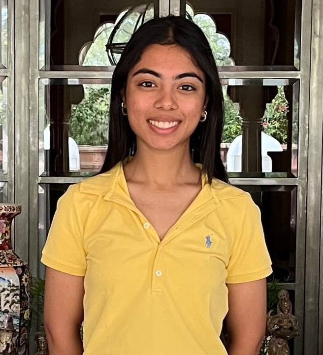

Today's fact is locked
Unlock it once a day to keep your streak going.

the founder ✦
forty things everyone believes. science disagrees.
pizza > most things
We only use 10% of our brains.
psychology is free
Anahat
FOUNDER · PSYCH HLA digitised notebook of every psychology fact I found.
And every myth I busted on the way.
est. 2026, Amritsar
Brain ka Blueprint · psychology, decoded for everyone
Brain ka Blueprint is a psychology page that makes the science of the mind easy and open to everyone. Psychology explains so much of everyday life, yet most of it is locked inside textbooks and journals. Here it comes as daily facts, myth busters and tiny puzzles you can get through in under a minute.
I'm Anahat Brar, an IBDP 1 student at Invictus International School, taking Psychology at Higher Level. I'm also the Deputy Head Girl of Student Well-being, so how students think and feel is close to my heart.My goal is simple: make psychology facts easy and accessible to everyone, one short post at a time.
Anahat · founder
Two pages, one person · unpacked
page one: the academics. page two: everything else
Anahat ✦
IBDP 1✓
Psychology HL ✓
Deputy Head Girl ✓
IRIS National Fair ✓
4 awards, 3 competitions ✓
Harvard Model Congress
Best Solution + Emerging LeaderHUGEM, Harvard
Best Detailed IdeaMayo College
Best Stage Presenceresearch
NeuroCalm Desk Matpizzathe answer to "what should we eat?"
padelthe one hour my brain switches off
mumhanging out with her is the best part of any day
my dogsprofessional stress relievers, unpaid
psych HLusing up most of the storage
the glasseswithout them the whiteboard is abstract art
the badgestudent well-being mode: always on
the notebookwritten at 11 pm, posted at 8 am
@brain.ka.
blueprintnew DM: "is that myth true??"
the DMswhere most post ideas come from
A new fact every single morning
Start your streakUnlock it once a day to keep your streak going.
Five myths a day · fresh every morning
swipe the cards, bust the myths
Myth or fact? Swipe left if you knew it was fake, right if you believed it.
Swipe a card to see what the research says.
things you've heard a hundred times ✦
Twelve quick tests · each one shows a shortcut your mind takes
The newsroom · updated 16 November 2026
early findings can change ✦
The experiments that changed psychology · sorted by IB approach
read a fact? want the whole story?
Try asking
AI can make mistakes. For anything about your own mental health, talk to a trusted adult or counsellor. In India, Tele-MANAS is free and open 24/7: 14416.
I read every DM
Ideas for a post, a myth you want busted, or a study you want explained. Follow the page for a new fact every day.
@brain.ka.blueprintPuzzle 01 · The Stroop test
5 rounds. Go as fast as you can.
Reading is so automatic that the word fights the colour. That clash slows you down.
Puzzle 02 · The bat and ball
The bat costs ₹100 more than the ball. How much does the ball cost?
Your fast "gut" system blurts an answer before your slow, careful system checks it.
Puzzle 03 · Müller-Lyer illusion
Puzzle 04 · The lily pads
It takes 48 days to cover the whole lake. How long to cover half of it?
"24" jumps out first. Your gut halves the number instead of thinking about doubling.
Puzzle 05 · The widget machines
How long would 100 machines take to make 100 widgets?
This is from Frederick's 2005 Cognitive Reflection Test, along with the bat and ball and the lily pads.
Puzzle 06 · Wason's four cards
The cards show E, K, 4 and 7. Which must you flip to test the rule?
In Wason's 1968 study, only about 1 in 10 people got it right. We look to confirm a rule, not to break it.
Puzzle 07 · The Linda problem
Which is more likely?
About 85% of people pick the second (Tversky & Kahneman, 1983). A good story beats the maths.
Puzzle 08 · Count the Fs
FINISHED FILES ARE THE RESULT OF YEARS OF SCIENTIFIC STUDY COMBINED WITH THE EXPERIENCE OF YEARS.
Puzzle 09 · Ebbinghaus illusion
Puzzle 10 · Digit span
Digits flash for a few seconds. Each round adds one more.
Most people manage about 7 digits. Grouping them into chunks, like a phone number, helps (Miller, 1956).
Puzzle 11 · Reaction time
Do it a few times and see your best.
A typical reaction to something you see takes about a quarter of a second. Sleep loss makes it slower.
Puzzle 12 · The Monty Hall problem
You pick door 1. The host, who knows where the prize is, opens door 3 to show it's empty. Should youswitch to door 2?
Most people feel it's 50/50. Our intuition about probability is easily fooled.